Latest: demo 3, "Killed by a number"
The current version of the chosen look. 100 seconds, wide 16:9, mixed audio. Every cut, reveal, character reaction and camera move is timed to the spoken words. New in this version: a more convincing break-up of the spacecraft in the Mars atmosphere, a larger diagram (Lockheed Martin sends pound-seconds, JPL reads newton-seconds, a 4.45 times mismatch that grows over nine months, arrival at 57 km), characters whose mouths move with the narration, a second navigator with a role of her own, and a designed music score.
Demo 3 (latest)
Demo 3: one frame every two seconds
![Frames from demo 3 in order: a spacecraft heating and tearing apart over Mars in orange streaks; a cut to black; the spacecraft firing its engine and passing behind Mars; two blue outlined characters in a teal mission control room, one with an orange headset; a diagram board with boxes labelled Lockheed Martin and JPL, the labels pound-seconds and newton-seconds, an orange times 4.45, a bar chart of an error growing over nine months and a path dropping to 57 km; an altitude gauge; the break-up; and a close-up of the lead character looking at the viewer.](frames-demo-3.jpg)
Demo 3 thumbnail variants
One concept, three texts: the lead character reacting to a red "UNITS MISMATCH" alert with the burning spacecraft behind.
A1: "WHO CHECKED?"
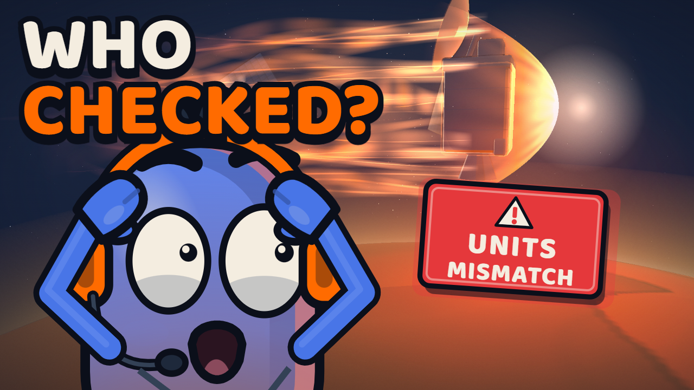
A2: "4.45X OFF"
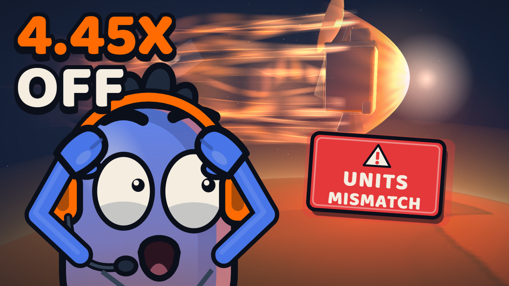
A3: "ONE NUMBER"
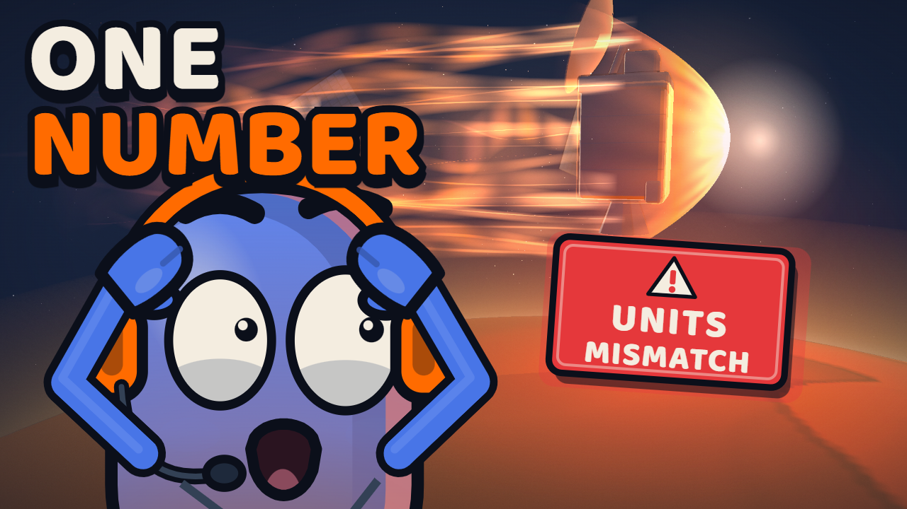
The same three at small sizes (160 px and 120 px wide)
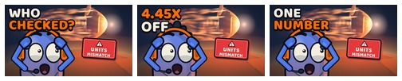
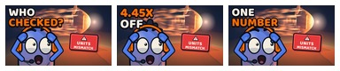
Talking-mouth clip
Four seconds of the shots in which a character's mouth moves in time with the narration.
Earlier: demo 2
The chosen direction after comparing the four options below: layered 2.5D scenes with outlined characters, plus true 3D hero shots, in navy and orange. This 84-second demo is the opening of a true story about the Mars Climate Orbiter, lost in 1999 because one team's software used pounds and another read newtons. It has mixed audio (voice, quiet music, sound effects).
Demo 2 (latest): revised opening, mixed sound
84 seconds, wide 16:9. Opens on the spacecraft burning up, then mission control, a diagram board and an altitude gauge.
Demo 2: one frame per second
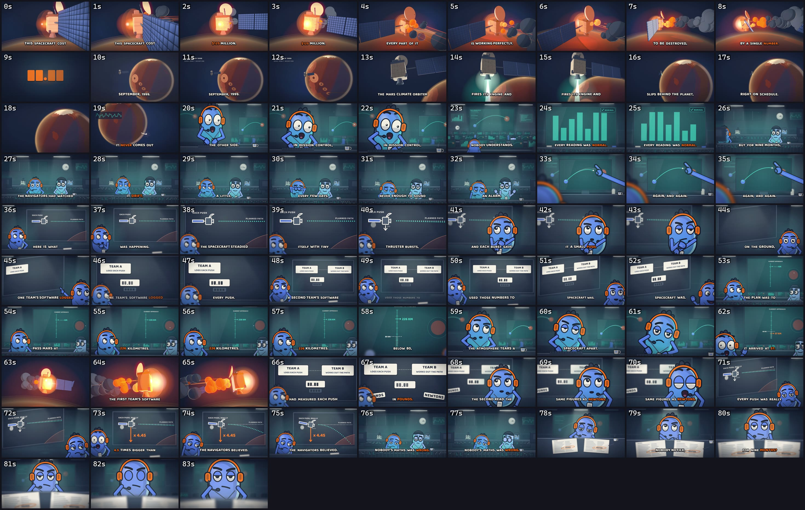
Thumbnail variants for demo 2
Thumbnail A
Thumbnail B
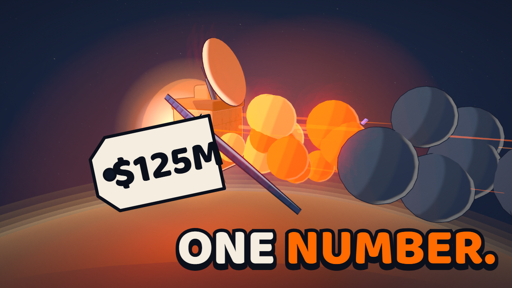
Thumbnail C
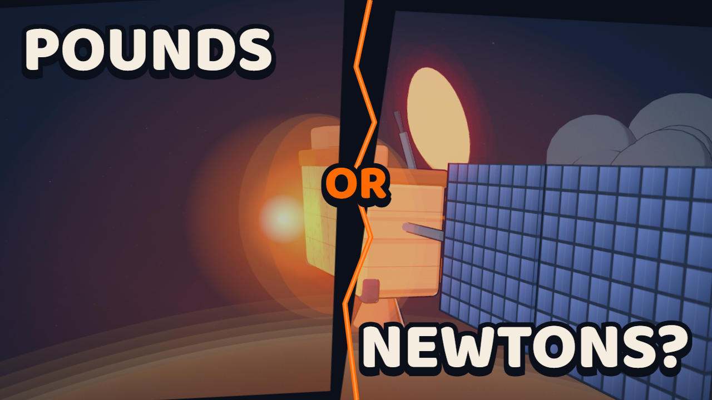
Voice options
The same three opening lines spoken by four voices, one after another, each named on screen (49 seconds).
Demo 1 (earlier version)
66 seconds, wide 16:9. The first demo in the chosen look, before the opening and the sound were revised.
Earlier comparison: four animation style options
Style tests for an animated explainer channel aimed at US and UK viewers. Everything is drawn in code. Options A, B and C tell the same 1977 satellite story with the same narration, so only the picture differs. Option D is a different story in the wide format used for long videos.
All four at a glance
Columns A, B and C show the same three moments. Column D shows three frames of its own story.

The videos
Option A: outlined 2D cartoon
45 seconds, vertical. Bold outlines, big reaction faces, one or two caption words at a time.
Option B: cartoon in a 3D world
25 seconds, vertical. The same characters in three-dimensional sets with a moving camera.
Option C: flat storybook
25 seconds, vertical. No outlines, few colours per scene, mood from light, calm camera, sentence captions.
Option D: "What If You Had to Land the Plane?"
66 seconds, wide 16:9. The flat look of option C with a second-person story, intended for 8 to 15 minute videos.
Option D thumbnail

Frame sheets: one frame per second
Option A
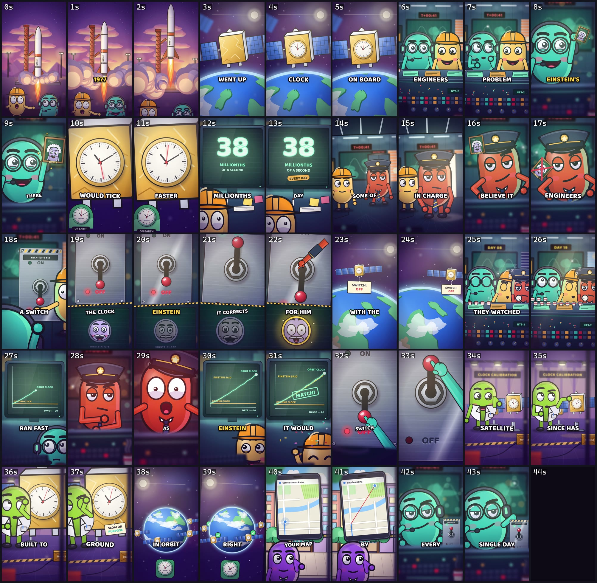
Option B
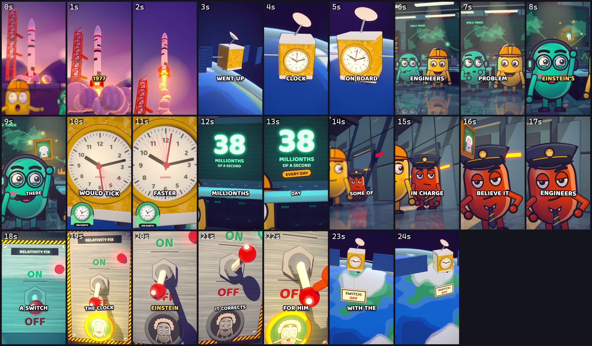
Option C

Option D
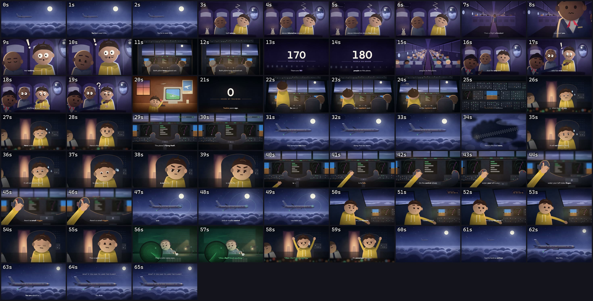